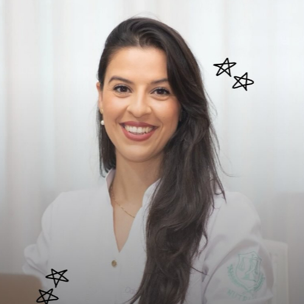
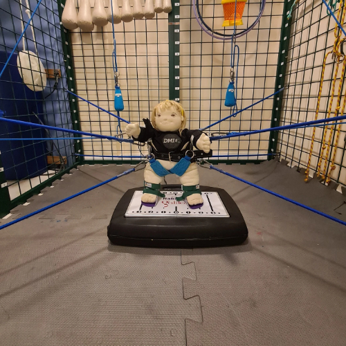
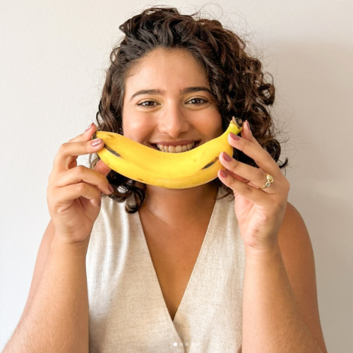

1° dia (27/10)
Corpo em Equilíbrio: Nutrição e Pilates para a saúde integral
com Daiane Renata do Nascimento
450 vagas
Cursos Convidados
19h10
Auditório Jamil Salomão
Daiane Renata do Nascimento é nutricionista formada pela Faculdade de Americana (FAM), Especialista em Nutrição Esportiva e Obesidade pela Universidade de São Paulo (USP) e em Microbiota Intestinal.

Pilates aplicado às disfunções da coluna vertebral
com Júlio César Domingues
450 vagas
Cursos Convidados
19h40
Auditório Jamil Salomão
Júlio César Domingues é fisioterapeuta formado pela Faculdade de Americana (FAM). Especialista em Osteopatia pela Escuela de Osteopatía de Madrid, instrutor e Teacher Trainning no método Pilates pela escola Dr. Pilates e formado em Análise Corporal e Comportamental.
A Fraqueza Adquirida na UTI pelo olhar do Fisioterapeuta
com Gabriela Lívio
450 vagas
Cursos Convidados
20h30
Auditório Jamil Salomão
Gabriela Lívio é fisioterapeuta formada UNIARARAS; com aprimoramento em Fisioterapia Cardiorrespiratória (UNICAMP); especialista em Fisioterapia em Terapia Intensiva Adulto (ASSOBRAFIR/COFFITO); MBA em Gestão e Inovação em Saúde (PUC/RS); mestranda em Gerontologia (FCM/UNICAMP); coordenadora da Reabilitação Hospitalar da Fundação Centro Médico de Campinas; coordenadora e RT de Fisioterapia em Terapia Intensiva do Hospital Beneficiência Portuguesa (Campinas); co-fundadora e sócia da INTENSIVA - Inovações em Fisioterapia Hospitalar.
Nutrição como terapia: combatendo a perda de massa muscular na UTI
com Thaís Otranto Rossi
450 vagas
Cursos Convidados
21h00
Auditório Jamil Salomão
Thaís Otranto Rossi é nutricionista pela Universidade Federal de Mato Grosso do Sul, especialista em nutrição clínica em terapia intensiva pela Residência Multiprofissional da PUC-Campinas, pós-graduada em Nutrição Renal pelo INADES e doutoranda em Alimentos e Nutrição pela UNICAMP. Atua como nutricionista clínica no Centro Infantil Boldrini e como docente de Nutrição na Faculdade de Americana.
2° dia (28/10)
Protocolo Therasuit
com Francielli H. B. da Silva, Matheus H. Domingos e Milene R. Goltara
450 vagas
Cursos Convidados
19h10
Auditório Jamil Salomão
- Francielli Helena Bueno da Silva é fisioterapeuta formada pela Faculdade de Americana (FAM), com aperfeiçoamento em Fisioterapia nas Disfunções Neurológicas da Criança e do Adulto (AACD) e formação no Therasuit Method® e Bobath Básico.
- Matheus Henrique Domingos é fisioterapeuta formado pela FAM, com pós-graduação em Fisioterapia Neuropediátrica (Prisma-FMG), formação no Therasuit Method®, aperfeiçoamento em Neurodesenvolvimento e Brincar Terapêutico e Pilates Neurológico Infantil.
- Milene Ruiz Goltara é fisioterapeuta formada pela FAM, especialista em Reabilitação Aplicada à Neurologia Infantil (UNICAMP) e certificada no Therasuit Method® e Bobath Pediátrico.

Nutrição e Paralisia Cerebral
com Rafaela Florentina Manoel
450 vagas
Cursos Convidados
19h40
Auditório Jamil Salomão
Rafaela Florentina Manoel é nutricionista formada pela UNESP Botucatu, PRAT em Nutrição Clínica Pediátrica pelo HC UNESP e especialista em Saúde da Criança e do Adolescente pela Residência Multiprofissional da PUC Campinas. É nutricionista responsável pelas enfermarias pediátricas, UTI Pediátrica e UTI Pediátrica Cardiológica do Hospital da PUC Campinas, preceptora dos programas de residência multiprofissional e mestranda no Programa de Pós-graduação em Saúde da Criança e do Adolescente da UNICAMP.

Exposição dos Projetos de Extensão desenvolvidos pelos cursos
com os cursos de Fisioterapia e Nutrição
450 vagas
Cursos Convidados
20h30
Auditório Jamil Salomão
Exposição dos Projetos de Extensão desenvolvidos pelos cursos.
Curta se achou a pagina útil e acompanhe Info.FAM